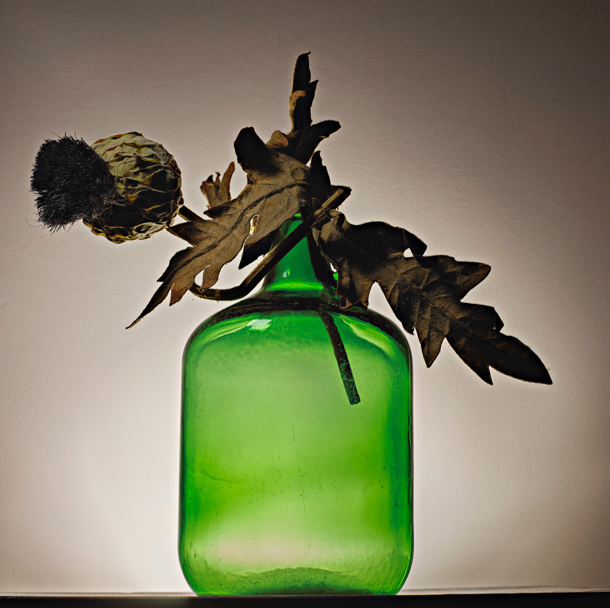

Finding simplicity in life

July 23, 2019 | 3 comments
Life can get complicated really quickly, but it doesn't have to be!
There
are many ways to simplify your life, a few of which we've explored in the past. This week we're
taking a bit of a approach though, in how you can find simplicity in the life you already living.
continue reading
Keeping cooking simple
Food is a very important part of everyone's life. If you want to be healthy, you have to eat
healthy. One of the easiest ways to do that is to keep your cooking nice and simple.
continue reading

July 19, 2019 | 3 comments
Simplicity and work
Work is often a major source of stress. People get frustrated, it ruins their relationship with
others and it leads to burnout. By keeping your work life as simple as possible, it will help
balance everything out.
continue reading
July 12, 2019 | 3 comments
Simple decorations
A home isn't a home until you've decorated a little. People either don't decorate, or they go
overboard and it doesn't have the impact they were hoping for. Staying simple will help draw the
eye where you want it to and make things pop like never before.
continue reading

July 3, 2019 | 3 comments